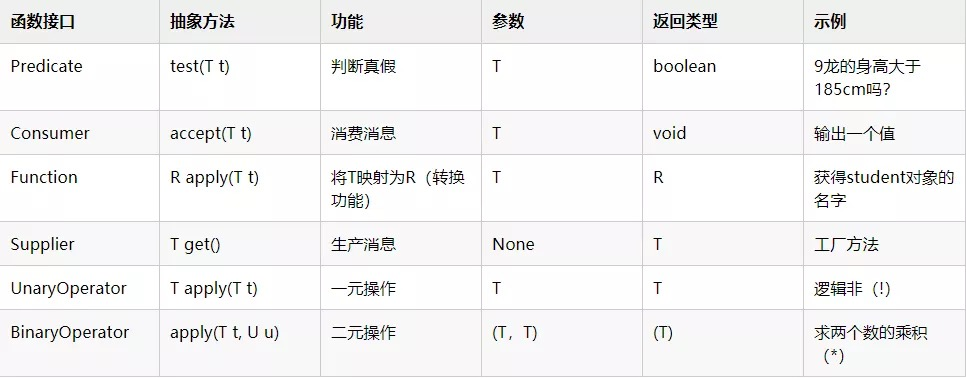
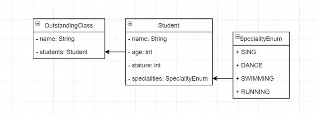
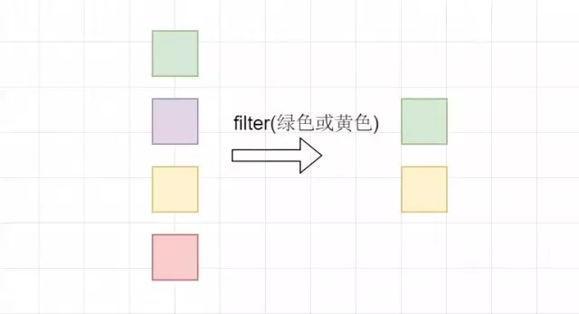
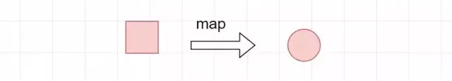
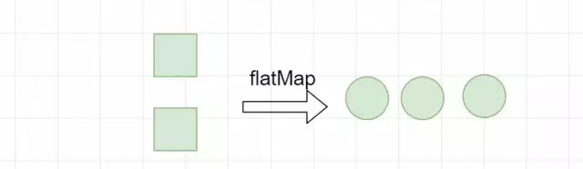
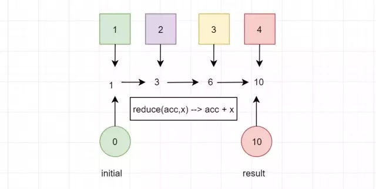
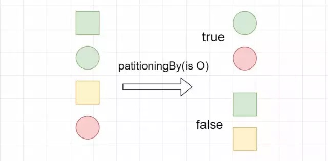
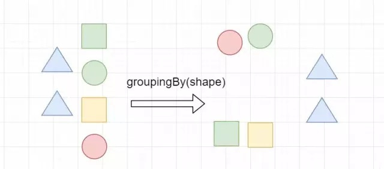

引言
Java8 最大的特性就是引入 Lambda 表达式，即函数式编程，可以将行为进行传递。总结就是：使用不可变值与函数，函数对不可变值进行处理，映射成另一个值。
Java 重要的函数式接口
什么是函数式接口
函数接口是只有一个抽象方法的接口，用作 Lambda 表达式的类型。使用 @FunctionalInterface 注解修饰的类，编译器会检测该类是否只有一个抽象方法或接口，否则，会报错。可以有多个默认方法，静态方法。
Java8 自带的常用函数式接口

1 2 3 4 5 6 7 8 9 10 11 12 13 14 15 16 17 18 19 20 21 22 23 24 25 26 27 28 29 30 31 32 33 34 35 36 37 38 39 40 41 42 43 44 45 46 47 48 49 50 51 public class Test public static void main (String[] args) Predicate<Integer> predicate = x -> x > 185 ; Student student = new Student("9龙" , 23 , 175 ); System.out.println( "9龙的身高高于185吗？：" + predicate.test(student.getStature())); Consumer<String> consumer = System.out::println; consumer.accept("命运由我不由天" ); Function<Student, String> function = Student::getName; String name = function.apply(student); System.out.println(name); Supplier<Integer> supplier = () -> Integer.valueOf(BigDecimal.TEN.toString()); System.out.println(supplier.get()); UnaryOperator<Boolean> unaryOperator = uglily -> !uglily; Boolean apply2 = unaryOperator.apply(true ); System.out.println(apply2); BinaryOperator<Integer> operator = (x, y) -> x * y; Integer integer = operator.apply(2 , 3 ); System.out.println(integer); test(() -> "我是一个演示的函数式接口" ); } * 演示自定义函数式接口使用 * * @param worker */ public static void test (Worker worker) String work = worker.work(); System.out.println(work); } public interface Worker String work () ; } }
以上演示了 Lambda 接口的使用及自定义一个函数式接口并使用。下面，我们看看 Java8 将函数式接口封装到流中如何高效的帮助我们处理集合。
注意：Student::getName 例子中这种编写 Lambda 表达式的方式称为方法引用。格式为 ClassNmae::methodName。是不是很神奇，Java8 就是这么迷人。
示例：本篇所有示例都基于以下三个类。OutstandingClass：班级；Student：学生；SpecialityEnum：特长。

惰性求值与及早求值
惰性求值：只描述 Stream，操作的结果也是 Stream，这样的操作称为惰性求值。惰性求值可以像建造者模式一样链式使用，最后再使用及早求值得到最终结果。
及早求值：得到最终的结果而不是 Stream，这样的操作称为及早求值。
常用的流
collect(Collectors.toList())将流转换为 list。还有 toSet()，toMap() 等。及早求值。
1 2 3 4 5 6 7 8 9 10 11 12 public class TestCase public static void main (String[] args) List<Student> studentList = Stream.of(new Student("路飞" , 22 , 175 ), new Student("红发" , 40 , 180 ), new Student("白胡子" , 50 , 185 )).collect(Collectors.toList()); System.out.println(studentList); } }
filter顾名思义，起过滤筛选的作用。内部就是 Predicate 接口。惰性求值。

比如我们筛选出出身高小于180的同学。
1 2 3 4 5 6 7 8 9 10 11 12 13 14 15 public class TestCase public static void main (String[] args) List<Student> students = new ArrayList<>(3 ); students.add(new Student("路飞" , 22 , 175 )); students.add(new Student("红发" , 40 , 180 )); students.add(new Student("白胡子" , 50 , 185 )); List<Student> list = students.stream() .filter(stu -> stu.getStature() < 180 ) .collect(Collectors.toList()); System.out.println(list); } }
map转换功能，内部就是 Function 接口。惰性求值

1 2 3 4 5 6 7 8 9 10 11 12 13 14 15 public class TestCase public static void main (String[] args) List<Student> students = new ArrayList<>(3 ); students.add(new Student("路飞" , 22 , 175 )); students.add(new Student("红发" , 40 , 180 )); students.add(new Student("白胡子" , 50 , 185 )); List<String> names = students.stream() .map(student -> student.getName()) .collect(Collectors.toList()); System.out.println(names); } }
例子中将 student 对象转换为 String 对象，获取 student 的名字。
flatMap将多个 Stream 合并为一个 Stream。惰性求值。

1 2 3 4 5 6 7 8 9 10 11 12 13 14 15 16 17 18 19 20 public class TestCase public static void main (String[] args) List<Student> students = new ArrayList<>(3 ); students.add(new Student("路飞" , 22 , 175 )); students.add(new Student("红发" , 40 , 180 )); students.add(new Student("白胡子" , 50 , 185 )); List<Student> studentList = Stream.of(students, asList(new Student("艾斯" , 25 , 183 ), new Student("雷利" , 48 , 176 ))) .flatMap(students1 -> students1.stream()).collect(Collectors.toList()); System.out.println(studentList); } }
调用 Stream.of 的静态方法将两个 list 转换为 Stream，再通过 flatMap 将两个流合并为一个。
max 和 min我们经常会在集合中求最大或最小值，使用流就很方便。及早求值。
1 2 3 4 5 6 7 8 9 10 11 12 13 14 15 16 17 18 19 20 21 22 23 public class TestCase public static void main (String[] args) List<Student> students = new ArrayList<>(3 ); students.add(new Student("路飞" , 22 , 175 )); students.add(new Student("红发" , 40 , 180 )); students.add(new Student("白胡子" , 50 , 185 )); Optional<Student> max = students.stream() .max(Comparator.comparing(stu -> stu.getAge())); Optional<Student> min = students.stream() .min(Comparator.comparing(stu -> stu.getAge())); if (max.isPresent()) { System.out.println(max.get()); } if (min.isPresent()) { System.out.println(min.get()); } } }
max、min接收一个 Comparator（例子中使用 Java8 自带的静态函数，只需要传进需要比较值即可。）并且返回一个 Optional 对象，该对象是 Java8 新增的类，专门为了防止 null 引发的空指针异常。
可以使用 max.isPresent() 判断是否有值；可以使用 max.orElse(new Student())，当值为 null 时就使用给定值；也可以使用 max.orElseGet(() -> new Student())；这需要传入一个 Supplier 的 Lambda 表达式。
count统计功能，一般都是结合filter使用，因为先筛选出我们需要的再统计即可。及早求值。
1 2 3 4 5 6 7 8 9 10 11 12 13 public class TestCase public static void main (String[] args) List<Student> students = new ArrayList<>(3 ); students.add(new Student("路飞" , 22 , 175 )); students.add(new Student("红发" , 40 , 180 )); students.add(new Student("白胡子" , 50 , 185 )); long count = students.stream().filter(s1 -> s1.getAge() < 45 ).count(); System.out.println("年龄小于45岁的人数是：" + count); } }
reducereduce 操作可以实现从一组值中生成一个值。在上述例子中用到的 count 、 min 和 max 方法，因为常用而被纳入标准库中。事实上，这些方法都是 reduce 操作。及早求值。

1 2 3 4 5 6 7 8 public class TestCase public static void main (String[] args) Integer reduce = Stream.of(1 , 2 , 3 , 4 ).reduce(0 , (acc, x) -> acc+ x); System.out.println(reduce); } }
我们看得 reduce 接收了一个初始值为0的累加器，依次取出值与累加器相加，最后累加器的值就是最终的结果。
高级集合类及收集器
转换成值
收集器，一种通用的、从流生成复杂值的结构。只要将它传给 collect 方法，所有的流就都可以使用它了。标准类库已经提供了一些有用的收集器，以下示例代码中的收集器都是从 java.util.stream.Collectors 类中静态导入的。
1 2 3 4 5 6 7 8 9 10 11 12 13 14 15 16 17 18 19 20 21 22 23 24 25 26 27 28 29 30 31 32 33 34 35 36 37 38 39 public class CollectorsTest public static void main (String[] args) List<Student> students1 = new ArrayList<>(3 ); students1.add(new Student("路飞" , 23 , 175 )); students1.add(new Student("红发" , 40 , 180 )); students1.add(new Student("白胡子" , 50 , 185 )); OutstandingClass ostClass1 = new OutstandingClass("一班" , students1); List<Student> students2 = new ArrayList<>(students1); students2.remove(1 ); OutstandingClass ostClass2 = new OutstandingClass("二班" , students2); Stream<OutstandingClass> classStream = Stream.of(ostClass1, ostClass2); OutstandingClass outstandingClass = biggestGroup(classStream); System.out.println("人数最多的班级是：" + outstandingClass.getName()); System.out.println("一班平均年龄是：" + averageNumberOfStudent(students1)); } * 获取人数最多的班级 */ private static OutstandingClass biggestGroup (Stream<OutstandingClass> outstandingClasses) return outstandingClasses.collect( maxBy(comparing(ostClass -> ostClass.getStudents().size()))) .orElseGet(OutstandingClass::new ); } * 计算平均年龄 */ private static double averageNumberOfStudent (List<Student> students) return students.stream().collect(averagingInt(Student::getAge)); } }
maxBy 或者 minBy 就是求最大值与最小值。
转换成块
常用的流操作是将其分解成两个集合，Collectors.partitioningBy 帮我们实现了，接收一个 Predicate 函数式接口。

将示例学生分为会唱歌与不会唱歌的两个集合。
1 2 3 4 5 6 7 8 public class PartitioningByTest public static void main (String[] args) Map<Boolean, List<Student>> listMap = students.stream().collect( Collectors.partitioningBy(student -> student.getSpecialities(). contains(SpecialityEnum.SING))); } }
数据分组
数据分组是一种更自然的分割数据操作，与将数据分成 ture 和 false 两部分不同，可以使用任意值对数据分组。Collectors.groupingBy 接收一个Function做转换。

如图，我们使用 groupingBy 将根据进行分组为圆形一组，三角形一组，正方形一组。
例子：根据学生第一个特长进行分组
1 2 3 4 5 6 7 8 public class GroupingByTest public static void main (String[] args) Map<SpecialityEnum, List<Student>> listMap = students.stream().collect( Collectors.groupingBy(student -> student.getSpecialities().get(0 ))); } }
Collectors.groupingBy 与SQL 中的 group by 操作是一样的。
字符串拼接
如果将所有学生的名字拼接起来，怎么做呢？通常只能创建一个 StringBuilder，循环拼接。使用Stream，使用 Collectors.joining() 简单容易。
1 2 3 4 5 6 7 8 9 10 11 12 13 14 public class JoiningTest public static void main (String[] args) List<Student> students = new ArrayList<>(3 ); students.add(new Student("路飞" , 22 , 175 )); students.add(new Student("红发" , 40 , 180 )); students.add(new Student("白胡子" , 50 , 185 )); String names = students.stream() .map(Student::getName).collect(Collectors.joining("," ,"[" ,"]" )); System.out.println(names); } }
joining 接收三个参数，第一个是分界符，第二个是前缀符，第三个是结束符。也可以不传入参数 Collectors.joining()，这样就是直接拼接。
总结
本篇主要从实际使用讲述了常用的方法及流，使用 Java8 可以很清晰表达你要做什么，代码也很简洁。本篇例子主要是为了讲解较为简单，大家可以去使用 Java8 重构自己现有的代码，自行领会 Lambda 的奥妙。
参考：https://mp.weixin.qq.com/s/fyaAo9yOtMqKHCxPhnLn4Q
If you like this blog or find it useful for you, you are welcome to comment on it. You are also welcome to share this blog, so that more people can participate in it. If the images used in the blog infringe your copyright, please contact the author to delete them. Thank you !